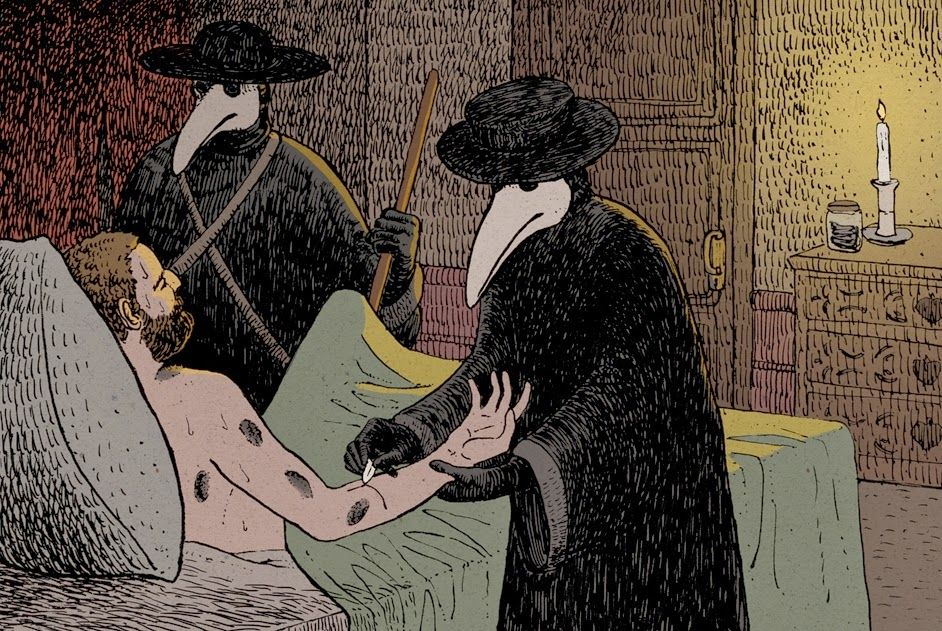

Tratamento
É recomendado o paciente procurar imediatamente o hospital. O diagnóstico é realizado por meio de um exame que colhe as secreções, ou através de amostras de sangue, em alguns casos pode ser realizado uma biópsia de uma “íngua” para confirmação da bactéria Yersinia pestis. O tratamento é feito dentro do ambiente hospitalar e o paciente faz o uso de antibióticos – e permanece isolado para não contaminar outras pessoas.
Como evitar?
Para evitar a doença é aconselhado livrar-se do acúmulo de lixo, papelão, revistas velhas para os ratos não utilizarem esses materiais como ninho. E também fazer o uso de produtos para conter pulgas nos animais domésticos, especialmente os que vivem na rua.
